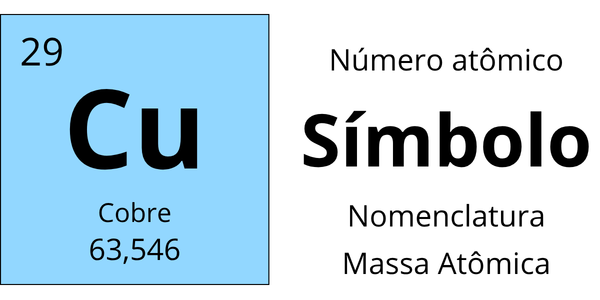
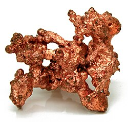

Fonte: Imagem criada pelo autor utilizando Canva, 2026.

Fonte: https://pt.wikipedia.org/wiki/Cobre, acesso em 01 set. 2026.
Seu estado físico em temperatura ambiente é sólido;
É um metal brilhoso com coloração avermelhada ou castanha;
Também é resistente à corrosão e a altas temperaturas, é também um bom condutor de eletricidade e calor.
Estima-se que foi descoberto em 9000 a.C., no Oriente Médio;
Não possui um descobridor determinado, já que foi encontrado por povos pré-históricos;
Suspeita-se ter sido o primeiro metal manipulado pelo ser humano, devido sua obtenção de forma nativa e fácil manipulação.
É encontrado na crosta terrestre na forma metálica e como minérios;
Ocorre tanto livre na natureza quanto combinado com outros elementos;
Está presente principalmente em calcopirite (CuFeS2), cuprita (Cu2O), calcocita (Cu2S), enargita (Cu3As5S4), covelita (CuS), bornita (Cu5FeS4), tetraedrita ((Cu, Fe) 12Sb4S13).
Eletrônicos e Redes Elétricas (Fios e Cabos):
Utilizado para conduzir energia em fiações de casas e circuitos eletrônicos devido à sua alta condutividade elétrica.
Construção Civil (Tubulações de Água Quente e Gás):
Empregado em tubos por conta de sua maleabilidade, durabilidade e resistência à corrosão.
Meios de Transporte (Motores e Conectores Automotivos):
Usado em componentes de veículos elétricos e à combustão para garantir conexões elétricas e transferência térmica.
Importância biológica:
O cobre pode ser comercializado como suplemento nutricional devido a sua importante influência no bom funcionamento do organismo humano. Ele participa da formação de células sanguíneas, enzimas antioxidantes, e hormônios; contribui com a síntese de neurotransmissores; e harmoniza a quantidade de ferro no organismo, além de influenciar na absorção de vitamina C.
Importância econômica:
Tem importância fundamental na indústria, com maior demanda pelo setor automotivo, máquinas e equipamentos e pela construção civil. O cobre metálico é usado principalmente para produção de tubos, conexões, perfis, placas, arames, fios, vergalhões, além de compor a liga usada na fabricação de moedas.
Impacto ambiental:
Sua extração descontrolada e o descarte inadequado pode contaminar o solo e recursos hídricos. Em alta concentração na água, torna-se tóxico para organismos como peixes.
Toxicidade:
O excesso de cobre pode ser causado por uma anomalia genética que impede o organismo de excretar esse excesso de cobre (doença de Wilson) ou, em casos raros, devido ao consumo excessivo de cobre.
Riscos à saúde:
O consumo de quantidades bem pequenas de cobre pode provocar náuseas, vômitos e diarreia. Grandes quantidades, podem danificar os rins, inibir a produção de urina e causar anemia devido à ruptura dos glóbulos vermelhos (anemia hemolítica), podendo até levar à morte.
Cuidados necessários em sua utilização:
Durante a extração, corte ou manipulação de pós e vapores de cobre, é necessário trabalhar em locais bem ventilados e utilizar EPIs como máscaras contra poeira metálica, luvas e óculos de proteção, para evitar a inalação do metal e o contato direto com a pele e olhos.